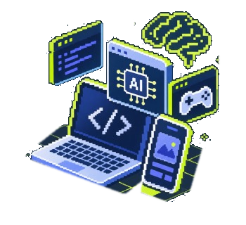

INNOVATION TRACK / 01

Software-Based
Solutions
Develop interactive digital solutions, AI-powered tools, applications, and games that support cognitive development, learning, memory, attention, and problem-solving.
EXAMPLE SOLO PROJECT
A memory-matching game with adjustable difficulty and clear visual prompts.